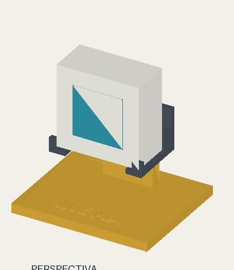
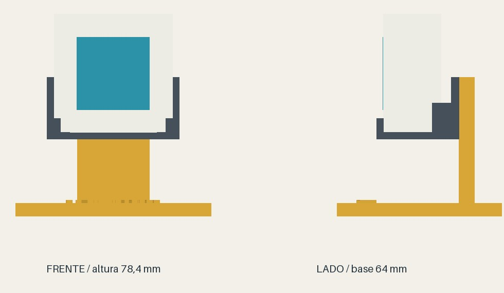
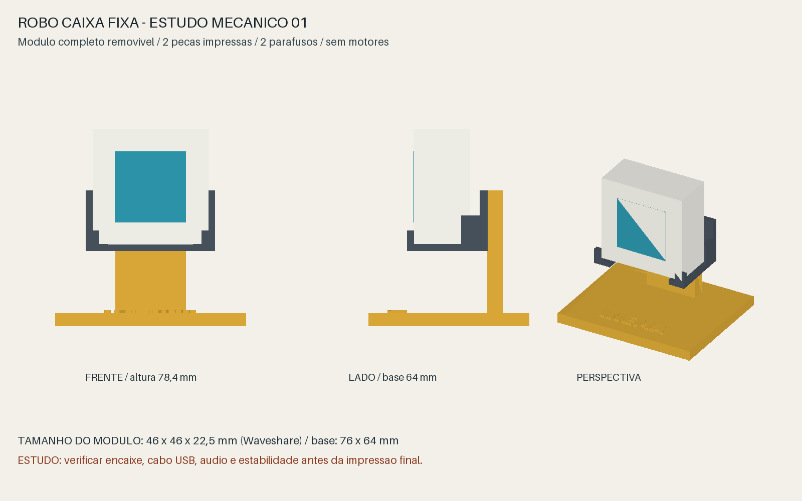

Você quer dar uma base ao seu módulo com tela sem montar motores e fios extras. O Robô caixa fixa entrega um suporte para imprimir em 3D: teste a peça de encaixe antes de gastar material na base inteira.

O Robô caixa fixa é um projeto de suporte impresso em 3D para quem quer montar um robô de mesa com menos mecânica. Ele usa o módulo Waveshare ESP32-S3 com tela de 1,54 polegadas, mantendo a carcaça e a eletrônica originais. Você baixa duas peças, testa primeiro o berço e depois imprime a base com INEMA em relevo, na mesma cor. Precisa de uma impressora 3D, Bambu Studio, filamento, módulo e parafusos. O desenho foi verificado no computador; o encaixe físico e a conversa por IA ainda não foram validados neste projeto.

Vídeo em português. Protótipo: encaixe físico e conversa por IA ainda não validados.
A tela, o áudio e a bateria opcional continuam no equipamento original. O suporte segura o conjunto e deixa a frente livre para o toque.

Base com coluna fixa e berço removível (a peça que segura a caixinha com tela). Dois parafusos M3 × 16 e duas porcas M3, ainda a conferir com as peças reais.
INEMA em relevo de 1,2 mm, letras engrossadas e deslocadas 4 mm para dentro da base. Um só sólido e a mesma cor do filamento.
Programa do rosto e conversa por IA. Computador local e conexão direta com uma API são caminhos futuros, não funções entregues.
É um protótipo. Nada foi impresso ou montado neste projeto. O módulo sai por cima e fica retido por gravidade: não levante o conjunto segurando no módulo. Áudio, cabo e estabilidade ao tocar precisam de teste físico.
O anúncio escolhido é o ESP32-S3 com tela de 1,54″. As fotos mostram versões com e sem bateria, com e sem toque. Todas são anunciadas com tela de 1,54″; a frente preta maior da versão touch não significa maior área de imagem.
O desenho oficial indica 46 × 46 × 22,5 mm para a carcaça representada. Meça a sua versão antes de imprimir. Não confunda com M5Stack CoreS3 Lite ou SpotPear Muma: encaixes e placas são diferentes.
Você não precisa desta parte para entender o desenho acima. Para imprimir, siga a sequência abaixo, começando pelo berço.
Arquivos STL são os modelos 3D. Ainda precisam ser fatiados para a sua impressora. Não são instruções prontas de impressão.
Baixar montagem 3D (GLB) · Ver resultado da verificação
O ZIP inclui os dois STL, a montagem 3D, o relatório geométrico e as instruções em português. Não contém G-code nem perfil 3MF validado. A base mede 76 × 64 mm; altura montada de 78,4 mm.
Fatiar é transformar o modelo em camadas e movimentos para a impressora. Faça isso no computador, não nesta página.
Abra o Bambu Studio. Selecione Bambu Lab A1, bico de 0,4 mm, a placa de impressão instalada e o filamento real. Se precisar instalar, use o download oficial.
Baixe o primeiro STL acima e arraste o arquivo para a mesa virtual. Mantenha a escala em 100%. O berço foi exportado apoiado pelas costas; não o gire para ficar como aparece montado na foto.
Tamanho esperado na mesa: 51,6 × 24 × 31,9 mm. Uma dimensão muito diferente indica escala ou orientação incorreta.
O botão também pode aparecer como Slice Plate. Na aba Prévia, percorra as camadas. Confira a primeira camada apoiada na mesa, nenhuma parte começando no ar e os suportes necessários. O programa informa o tempo e o filamento de verdade.
Se houver aviso de malha ou orientação, pare antes de imprimir e confira o arquivo. Os STL passaram nos testes geométricos, mas isso não substitui a prévia do fatiador.
Abra o segundo STL, mantenha a base apoiada no piso e repita o fatiamento. O INEMA já faz parte da peça: use uma só cor. Una base e berço com dois M3 × 16 e duas porcas M3 antes de colocar o módulo. Confira o comprimento dos parafusos, a passagem do USB e a estabilidade ao tocar na tela.
Ainda falta: fatiamento conferido, impressão física, encaixe na sua variante, plugue USB real, acústica e estabilidade. Não há previsão de duração de impressão medida.